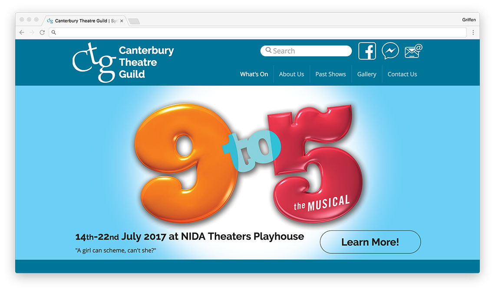

Canterbury Theatre Guild
The Canterbury Theatre Guild is a not-for-profit community based musical theatre group where members of the community are welcome to join and participate in putting on a musical, concert and/or cabaret once or twice a year.
